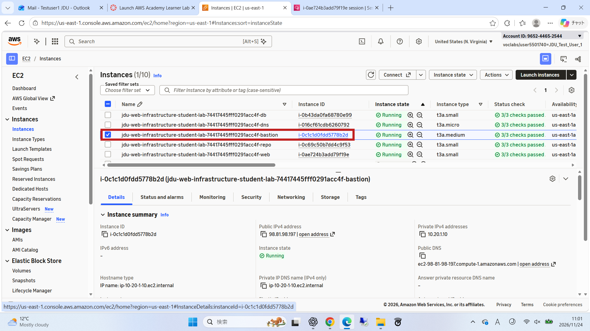
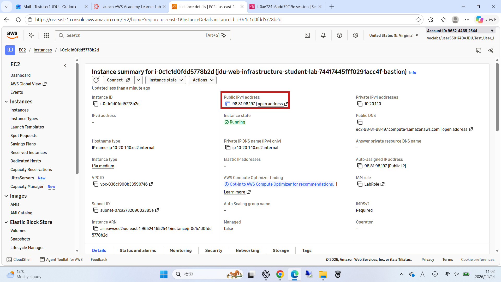
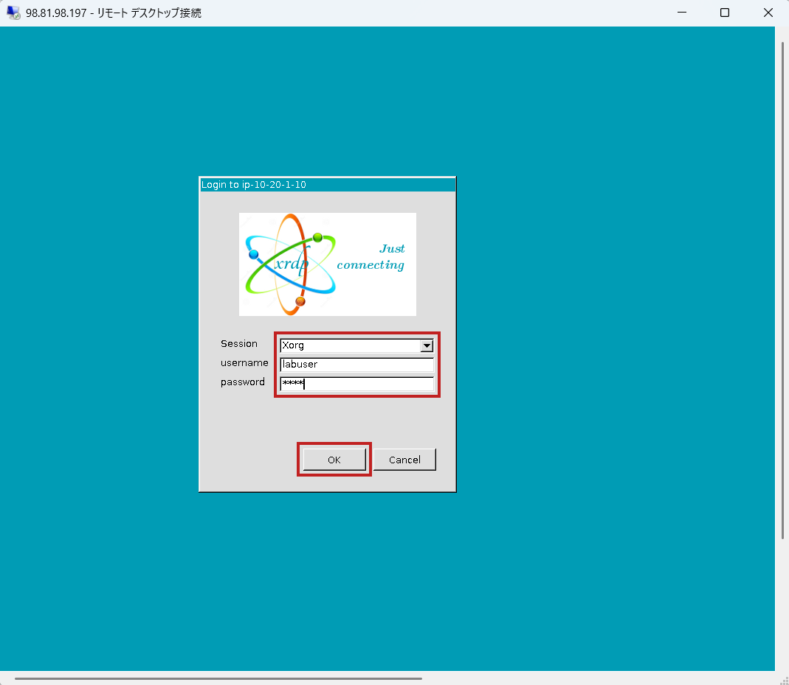
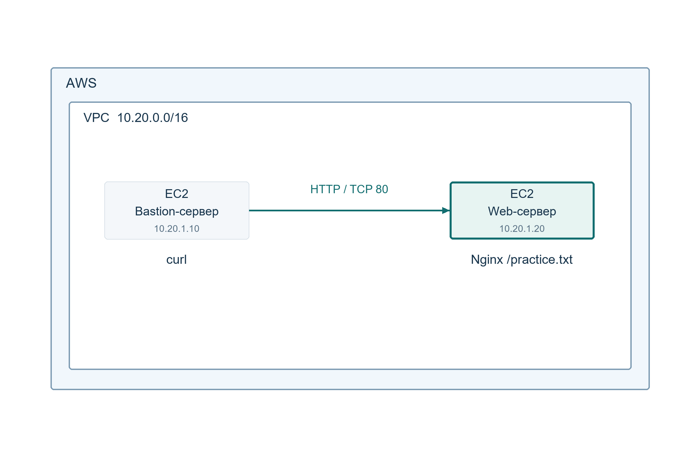
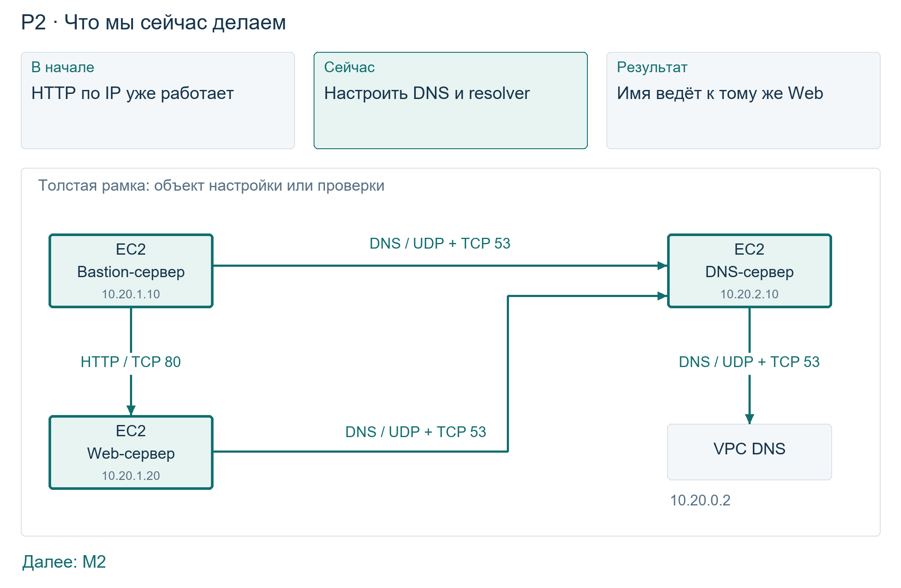
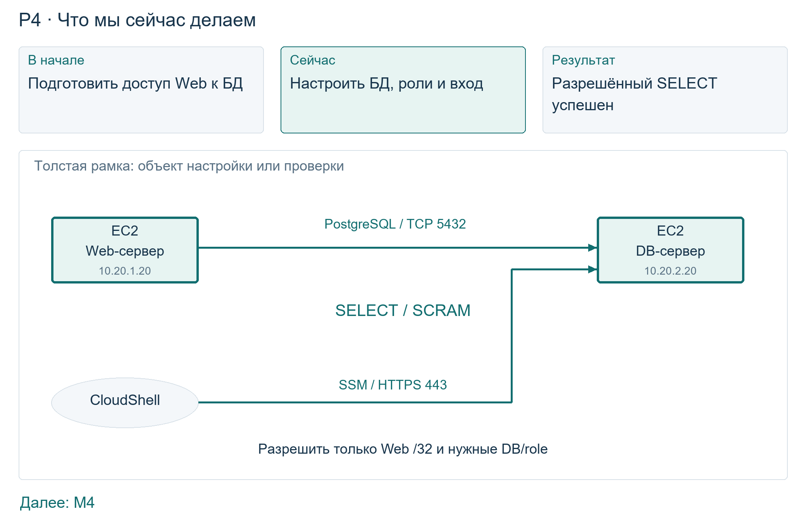

Web Infrastructure: практика P0-P5 с подробными шагами
Первая редакция для проверки преподавателем. Полное прохождение по пособию студентом ещё не проверено.
Русский и узбекский тексты синхронизированы с японским оригиналом. Редактура носителями языка ещё не выполнена.
Практика P0–P5 · Задания M0–M5
Как пользоваться пособием
Сначала прочитайте задание P; при необходимости проходите подробный пример по шагам. P - тренировка с подробными шагами. В M самостоятельно используйте другие объекты/значения. Номера заданий не являются номерами занятий; идите в своём темпе. Выполнение P не означает выполнение M.
P0 → M0 → P1 → M1 → P2 → M2 → P3 → M3 → P4 → P5 → M4 → M5
P4 требует DNS из M2. В P3 потренируйтесь подключаться к БД по IP и имени. Приложение использует db.lab.test. Перед переключением practice → mission завершите setup в P5.
Все задания P0–P5 и M0–M5 оцениваются. P дают 60 баллов, M — 63 балла; всего 123 балла. Нет личной демонстрации, backup/restore, дополнительных дисков и разработки приложения. Пересчёт в 25 баллов делает преподаватель отдельно. Повторные отправки возможны до объявленного срока. PASS разных попыток не объединяются; максимум автоматически не выбирается.
Среда и подготовка
Сначала завершите проверку подписи начального комплекта, создание пяти узлов либо install в существующую среду, внутренний SSH и личную регистрацию. Инструкция - distribution/STUDENT.md в zip. Не храните приватные ключи в общем Windows; используйте CloudShell личного Academy account. Преподаватель выдаёт личный анонимный Lab ID, fingerprint и срок действия.
Общие private IP ниже; public IPv4 не фиксируется. AWS region us-east-1, Ubuntu24.04/amd64. RDP: labuser; SSM: ssm-user; внутренний SSH: ubuntu. Не путайте пользователя и роль сервера.
| Role | Private IPv4 | Назначение |
|---|---|---|
| bastion | 10.20.1.10 | RDP3389 / Firefox / SSH |
| web | 10.20.1.20 | HTTP80 / private8080 / loopback8000 |
| dns | 10.20.2.10 | BIND UDP/TCP53 |
| db | 10.20.2.20 | PostgreSQL5432 |
| repo | 10.20.2.30 | HTTP80 с заранее сохранёнными подписанными ресурсами |
В P0 и M0 открывайте Session Manager из списка EC2. Если в дальнейшем шаг требует подключения из CloudShell, выполните там aws ssm start-session --target i-..., подставив ID сервера. В обоих случаях на сервере используется ssm-user.
Редактор nano: открыть файл → ввести текст → Ctrl+O → Enter сохранить → Ctrl+X выйти. Блок конфигурации не выполняется как shell-команда. В psql меняется prompt; SQL/\password вводятся внутри, \q возвращает в Ubuntu. Не продолжайте после ошибки без проверки результата.
Нумерованные комментарии показывают порядок и цель внутри шага. # используется в shell, -- внутри psql. Комментарии менять не нужно. Выполняйте по одной команде, дожидаясь подключения, редактора и ввода пароля. Команда с продолжением строки остаётся одной командой.
Как читать шаги
Сначала прочитайте описание работы и схему Practice. Проверьте, где нужно выполнять шаги. Запускайте команды по одной и проверяйте вывод. Обратная косая черта в конце строки продолжает команду на следующей строке.
Блок bash вводится в терминале указанного узла. Блок text может содержать конфигурацию, ввод внутри psql или пример вывода: читайте пояснение перед ним. Строка с # - комментарий. Не добавляйте приглашение $ или postgres=# из своего терминала. Значения с YOUR- заменяйте своими.
Проверяйте по порядку: сохранённый файл, синтаксис, применение к службе, реальное соединение. Правильный файл ещё не доказывает, что работающая служба уже использует его. Сопоставляйте HTTP-ответ, DNS-ответ или SQL-результат с журналом.
Система и пути соединений
| Источник | Назначение | Protocol / port | Цель |
|---|---|---|---|
| Windows PC | Web public IPv4 | TCP/80 | Публичный доступ через Internet Gateway к каталогу и статическим файлам. |
| Windows PC | bastion public IPv4 | TCP/3389 | RDP из разрешённого CIDR к рабочему столу бастиона. |
| bastion | Web/DNS/DB/repo | TCP/22 | Внутренний SSH для управления; приватный ключ остаётся на бастионе. |
| bastion / Web | DNS 10.20.2.10 | UDP+TCP/53 | Разрешение имён lab.test. DNS не выдаёт содержимое Web-страницы. |
| Web app | DB 10.20.2.20 | TCP/5432 | SQL от роли приложения. Прямое соединение Windows с DB не используется. |
| bastion | Web 10.20.1.20 | TCP/8080 | Администрирование через admin.lab.test отдельно от публичного порта 80. |
| Nginx on Web | 127.0.0.1 on Web | TCP/8000 | Передача приложению на том же Web; 127.0.0.1 - текущий локальный узел. |
SSM начальной среды - отдельный путь управления из CloudShell в EC2. Он не включён в путь обычного Web-запроса. Внутренние IP и порты таблицы заданы этим Lab, а не всеми Web-системами.
P0 Своя среда и место выполнения команд
Что изучаем
Выбрать нужный сервер в списке EC2, подключиться через Session Manager и проверить результат задания.
Задание
В своей готовой среде проверьте идентификаторы и роли пяти серверов, затем проверьте, к какому серверу и под каким пользователем вы подключились.
Подключение к серверам

Зелёная стрелка ведёт к Web-серверу в P0.2.
Что сделать в Practice0
Проверьте свой AWS-аккаунт, роль каждого сервера и среду выполнения команд.
Пример решения (порядок действий)
P0.1 Проверить instance ID пяти серверов
Среда выполнения:
AWS Console своего студенческого аккаунта
Цель и действия:
Введите EC2 в поле Search в верхней части AWS Console и откройте консоль EC2. Откройте EC2 → Instances и найдите пять серверов своей среды в столбце Name. В той же строке проверьте полный идентификатор с префиксом i- в столбце Instance ID.

Список Instances в EC2. Для P0 выберите строку с окончанием имени -web, для M0 - -db, -dns, -repo и -bastion по очереди.
P0.2 Подключиться к Web-серверу через Session Manager
Среда выполнения:
SSM-терминал Web-сервера: ssm-user
Цель и действия:
Нажмите Instance ID Web-сервера, найденного в P0.1. На странице сведений нажмите стрелку справа от Connect и выберите Connect with SSM Session Manager. В терминале новой вкладки выполняйте команды по одной. Выведите файл /etc/jdu-web/bootstrap.json, созданный при начальной настройке, командой cat и найдите "role": "web". Убедившись, что это Web-сервер, создайте проверочный файл в домашнем каталоге через nano.

Страница EC2. Нажмите стрелку справа от Connect и выберите Connect with SSM Session Manager. На снимке показан Web-сервер.
Команды: нумерация внутри этого шага
# 1. Показать имя пользователя ОС в этом терминале.
id -un
# 2. Перейти в свой домашний каталог.
cd ~
# 3. Показать текущий рабочий каталог.
pwd
# 4. Прочитать /etc/jdu-web/bootstrap.json с правами администратора.
cat /etc/jdu-web/bootstrap.json
# 5. Введите только web. Сохраните через Ctrl+O и Enter, выйдите через Ctrl+X.
nano p0-connection.txt
# 6. Прочитать p0-connection.txt с правами администратора.
cat p0-connection.txt
Ожидаемый результат и его смысл:
Команда id -un выводит ssm-user, а pwd - /home/ssm-user. В JSON-файле есть "role": "web", а последняя команда cat выводит только строку web.
P0.3 Открыть рабочий стол бастиона по RDP
Среда выполнения:
Windows PC студента (общая учётная запись)
Цель и действия:
Откройте рабочий стол своего бастиона через приложение Windows «Подключение к удалённому рабочему столу».
1. Выберите бастион
Откройте EC2 → Instances, найдите в своей учебной среде строку с окончанием имени -bastion и нажмите Instance ID в этой строке.

2. Скопируйте публичный IPv4-адрес
На странице экземпляра нажмите значок копирования рядом с Public IPv4 address. На следующем шаге используйте текущий адрес из своей консоли. Адрес на снимке приведён для примера.


Нажмите Windows+R, чтобы открыть окно «Выполнить». Введите mstsc /prompt в поле «Открыть» и нажмите OK.
Команды: нумерация внутри этого шага
# 1. Открыть RDP Windows с запросом учётных данных.
mstsc /prompt
3. Введите публичный IPv4-адрес и подключитесь
В окне «Подключение к удалённому рабочему столу» вставьте скопированный на шаге 2 публичный IPv4-адрес в поле Компьютер и нажмите Подключить.

4. Проверьте предупреждение о сертификате
Если появилось это окно, сверьте адрес назначения с публичным IPv4 из шага 2. Нажмите Да, когда преподаватель подтвердит, что это ваш бастион и сертификат учебной среды. Если подтвердить это не удалось, нажмите Нет и обратитесь к преподавателю.

5. Войдите на бастион
В окне входа xrdp проверьте, что в поле Session выбрано Xorg. Введите labuser в поле username, свой пароль RDP из начальной настройки в поле password и нажмите OK.

6. Убедитесь, что рабочий стол открылся
Если в окне удалённого рабочего стола видно меню Applications слева вверху и значок Home, вы подключены к бастиону.

Смысл команд и настроек:
RDP передаёт экран и ввод бастиона. Запрос Firefox внутри RDP идёт от бастиона, а не Windows. Раскладка клавиатуры влияет на символы пароля; язык интерфейса и раскладка - разные настройки.
Ожидаемый результат и его смысл:
Откроется рабочий стол Ubuntu (Xfce) бастиона. Чтобы открыть Firefox и другие программы, используйте меню Applications.
Если не получилось:
При Login failed проверьте имя и раскладку клавиатуры. Не отправляйте пароль в чат. При недоступности сверьте текущий IP и разрешённый CIDR с преподавателем; не открывайте 3389 для всех. Перед закрытием RDP сохраните работу.
Проверка и сдача
Откройте адрес портала из объявления преподавателя в браузере на своём компьютере и войдите с учебным аккаунтом Google. При первом входе выберите регистрацию своей среды AWS и следуйте указаниям на экране.
В строке P0 нажмите Проверить это задание. Посмотрите результат на этой же странице и убедитесь, что в строке P0 сохранён 1 / 1.
P1 Выдача статического файла по HTTP
Что изучаем
Связать Nginx, файл, прослушивание порта, HTTP-ответ и access log.
Задание
Настройте Nginx для выдачи /var/www/jdu-practice/practice.txt по HTTP.
Схема задания

- File: /var/www/jdu-practice/practice.txt
- URL path: /practice.txt
JDU WEB-02 practice: HTTP response verified.
Что сделать в Practice1
Настройте Nginx для выдачи текста файла по HTTP на TCP-порту 80 по пути /practice.txt. Выполните запросы из терминалов Web-сервера и бастиона, затем найдите их в журнале доступа Nginx.
Пример решения (порядок действий)
P1.1 Установить Nginx из внутреннего APT
Среда выполнения:
SSM-терминал Web-сервера: ssm-user
Цель и действия:
Подключитесь к Web-серверу через SSM, как в P0. Скачайте пакет Nginx с внутреннего Repo-сервера (10.20.2.30) и установите его на Web-сервере.

Команды: нумерация внутри этого шага
# 1. Обновить список пакетов с внутреннего сервера.
sudo apt-get update
# 2. Установить nginx с внутреннего сервера пакетов.
sudo apt-get install nginx
Смысл команд и настроек:
apt-get update обновляет список доступных пакетов. apt-get install nginx использует этот список для установки Nginx.
Ожидаемый результат и его смысл:
При обновлении списка в строке внутреннего сервера появляется Hit: или Get:. Сообщение N: Ignoring file ... ubuntu.sources.jdu-disabled означает, что APT пропустил стандартный источник Ubuntu, отключённый при начальной настройке. Если ошибок загрузки или проверки подписи нет, продолжайте установку. Если APT запросит подтверждение, введите Y.
Если не получилось:
Если не удалось получить список пакетов, проверьте состояние и IP-адрес внутреннего сервера пакетов.
P1.2 Создать точный текст и права файла
Среда выполнения:
SSM-терминал Web-сервера: ssm-user
Цель и действия:
Запишите текст в рабочий файл, затем скопируйте его в каталог, из которого Nginx выдаёт файлы.
Команды: нумерация внутри этого шага
# 1. Перейти в свой домашний каталог.
cd ~
# 2. Создать рабочий каталог; существующий сохранить.
mkdir -p jdu-web-practice/p1
# 3. Перейти в рабочий каталог jdu-web-practice/p1.
cd jdu-web-practice/p1
# 4. Показать текущий рабочий каталог.
pwd
# 5. Открыть practice.txt: ввести текст, сохранить и выйти.
nano practice.txt
Текст для ввода в nano
JDU WEB-02 practice: HTTP response verified.
Введите в nano ровно эту строку и нажмите Enter в конце. Сохраните файл клавишами Ctrl+O, затем Enter, и выйдите через Ctrl+X. В терминале продолжите с шага 6.
Команды: нумерация внутри этого шага
# 6. Создать каталог /var/www/jdu-practice.
sudo mkdir -p /var/www/jdu-practice
# 7. Скопировать файлы в /var/www/jdu-practice/practice.txt.
sudo cp practice.txt /var/www/jdu-practice/practice.txt
# 8. Задать владельца и группу root:www-data для /var/www/jdu-practice/practice.txt.
sudo chown root:www-data /var/www/jdu-practice/practice.txt
# 9. Задать права 0640 для /var/www/jdu-practice/practice.txt.
sudo chmod 0640 /var/www/jdu-practice/practice.txt
# 10. Прочитать владельца, группу, права и имя указанных файлов.
stat -c '%U:%G %a %n' /var/www/jdu-practice/practice.txt
# 11. Прочитать /var/www/jdu-practice/practice.txt с правами администратора.
sudo cat /var/www/jdu-practice/practice.txt
Смысл команд и настроек:
chown root:www-data задаёт владельца root и группу www-data. chmod 0640 разрешает владельцу читать и писать, группе - читать, остальным доступ закрыт. Рабочие процессы Nginx работают от www-data и читают файл с правами этой группы.
Ожидаемый результат и его смысл:
Показано root:www-data 640 /var/www/jdu-practice/practice.txt; текст - одна строка JDU WEB-02 practice: HTTP response verified..
Если не получилось:
Если nano ещё открыт, сохраните файл и выйдите перед следующей командой.
P1.3 Настроить каталог выдачи в Nginx
Среда выполнения:
SSM-терминал Web-сервера: ssm-user
Цель и действия:
Откройте настройки командой sudo nano /etc/nginx/sites-available/default. Добавьте блок ниже внутрь существующего server { ... } с listen 80, вне других блоков location. Для запроса /practice.txt Nginx добавляет путь к root и читает /var/www/jdu-practice/practice.txt. Сохраните файл, проверьте синтаксис и перечитайте настройки.
Команды: нумерация внутри этого шага
# 1. Открыть /etc/nginx/sites-available/default в nano.
sudo nano /etc/nginx/sites-available/default
Место добавления

Найдите location / { в nano. Можно нажать Ctrl+W и найти location /. Не удаляйте строку try_files $uri $uri/ =404; и следующую }: эта скобка завершает существующий блок location /. Переместите курсор на пустую строку ниже этой скобки и добавьте следующие три строки. Не вставляйте их между try_files и закрывающей скобкой.
Настройки для nano
location = /practice.txt {
root /var/www/jdu-practice;
}
Расположение после добавления (фрагмент)
Существующий и новый блоки должны стоять рядом, как ниже. Оба находятся внутри существующего server { ... }. Не заменяйте весь файл этим примером: сохраните остальные настройки и расположенную выше строку root /var/www/html;.
location / {
try_files $uri $uri/ =404;
}
location = /practice.txt {
root /var/www/jdu-practice;
}
location = /practice.txt применяется при точном совпадении пути запроса с /practice.txt. Только в этом случае используется новый root и читается /var/www/jdu-practice/practice.txt.
Сохраните настройки через Ctrl+O, Enter и выйдите через Ctrl+X. В терминале выполните следующие команды.
Команды: нумерация внутри этого шага
# 2. Вывести полную конфигурацию Nginx и посмотреть, как она записана.
sudo nginx -T
# 3. Проверить синтаксис и файлы конфигурации Nginx.
sudo nginx -t
# 4. Запустить nginx сейчас и включить автозапуск.
sudo systemctl enable --now nginx
# 5. Перечитать настройки nginx без остановки.
sudo systemctl reload nginx
# 6. Прочитать текущее состояние nginx.
systemctl is-active nginx
# 7. Убедиться, что Nginx слушает TCP-порт 80, например 0.0.0.0:80.
sudo ss -lntp
Смысл команд и настроек:
Nginx -T выводит конфигурацию, -t проверяет синтаксис. В systemctl enable включает запуск при загрузке, --now запускает сейчас. После сохранения файла проверьте reload, состояние службы и порт.
Ожидаемый результат и его смысл:
Проверка синтаксиса выводит syntax is ok и test is successful, а служба показывает active. Проверьте, что Nginx слушает TCP-порт 80, например 0.0.0.0:80.
Если не получилось:
При ошибке синтаксиса исправьте файл и строку, указанные в выводе nginx -t.
P1.4 Посмотреть ответ на самом Web
Среда выполнения:
SSM-терминал Web-сервера: ssm-user
Цель и действия:
Отправьте HTTP-запрос командой curl в терминале Web-сервера. Адрес 127.0.0.1 указывает на этот же сервер.

Команды: нумерация внутри этого шага
# 1. Отправить HTTP-запрос по адресу http://127.0.0.1/practice.txt.
curl -i http://127.0.0.1/practice.txt
Смысл команд и настроек:
127.0.0.1 - адрес обратной петли. Запрос приходит в Nginx на том же Web-сервере.
Ожидаемый результат и его смысл:
Отображаются HTTP 200 и строка из practice.txt: JDU WEB-02 practice: HTTP response verified.
Если не получилось:
Если показано «Welcome to nginx», проверьте путь /practice.txt в команде curl. По адресу http://127.0.0.1/ может открыться начальная страница Nginx.
P1.5 Проверить тот же файл с бастиона
Среда выполнения:
SSM-терминал бастиона: ssm-user
Цель и действия:
Подключитесь к бастиону через SSM и отправьте HTTP-запрос к Web-серверу командой curl. Из внутренней сети используйте внутренний IP Web-сервера 10.20.1.20.

Команды: нумерация внутри этого шага
# 1. Отправить HTTP-запрос по адресу http://10.20.1.20/practice.txt.
curl -i http://10.20.1.20/practice.txt
Смысл команд и настроек:
Адрес назначения меняется на внутренний IP Web-сервера. Путь к файлу остаётся тем же, что и в P1.4, - /practice.txt.
Ожидаемый результат и его смысл:
Отображаются HTTP 200 и строка JDU WEB-02 practice: HTTP response verified.
P1.6 Связать запрос с журналом и отправить
Среда выполнения:
SSM-терминал Web-сервера: ssm-user
Цель и действия:
Вернитесь на Web. В access log найдите время, IP клиента, путь и статус. Это доказательство обработки запроса, не только наличия файла. После exit в CloudShell выберите P1 в Web Portal на PC и запустите проверку.
Команды: нумерация внутри этого шага
# 1. Прочитать последние 20 строк access log и найти свой HTTP-запрос.
sudo tail -n 20 /var/log/nginx/access.log
# 2. Закрыть сеанс текущего сервера и вернуться в CloudShell.
exit
Смысл команд и настроек:
Сопоставьте время, путь и статус в access log с недавним curl. Tail читает последние строки и не меняет журнал. После exit проверьте P1 в браузере PC.
Ожидаемый результат и его смысл:
На экране показываются результаты восьми проверок и число выполненных критериев. Система автоматически проверяет HTTP-доступ по публичному IP.
Если не получилось:
Если идёт обработка, обновите результат. При ошибке сохранения прочитайте причину. Не меняйте ожидаемый текст checker.
Пример чтения вывода (не вводить)
HTTP/1.1 200 OK
JDU WEB-02 practice: HTTP response verified.
Показаны только нужные строки; реальный ответ содержит и другие заголовки. Проверьте 200, текст и путь/статус в access log.
Проверка понимания (без баллов)
На Web ответ 200, а с бастиона соединение не проходит. Что проверить до изменения файла?
Объяснение:
Адрес назначения, адрес/порт прослушивания и разрешение пути bastion → Web. Содержимое файла и доступность - разные проверки.
P2 Внутренний DNS и системное разрешение имён
Что сделать в Practice2
Запишите имена Web и DB во внутреннем DNS. Настройте бастион и Web на этот DNS и откройте файл P1 по имени.
Схема задания

Пример решения (порядок действий)
P2.1 Установить BIND с сервера пакетов
Среда выполнения:
SSM-терминал DNS-сервера: ssm-user
На DNS-сервере обновите список пакетов, установите BIND и инструменты проверки. Сделайте копии двух файлов перед редактированием.
Команды: нумерация внутри этого шага
# 1. Обновить список пакетов с внутреннего сервера.
sudo apt-get update
# 2. Установить bind9 bind9-utils и обязательные зависимости с сервера пакетов.
sudo apt-get install --no-install-recommends bind9 bind9-utils
# 3. Скопировать исходный файл в резервную копию, не затирая существующую.
sudo cp -an /etc/bind/named.conf.options /etc/bind/named.conf.options.before-p2
# 4. Скопировать исходный файл в резервную копию, не затирая существующую.
sudo cp -an /etc/bind/named.conf.local /etc/bind/named.conf.local.before-p2
Ожидаемый результат и его смысл:
Установлены bind9 и bind9-utils, появились две копии .before-p2.
P2.2 Указать, от кого DNS принимает запросы
Среда выполнения:
SSM-терминал DNS-сервера: ssm-user
Разрешите запросы от DNS-сервера, бастиона и Web-сервера. Имена вне учебной зоны передаются DNS AWS (10.20.0.2).
Замените содержимое файлом настроек ниже. В nano для поиска используйте Ctrl+W, для сохранения Ctrl+O и Enter, для выхода Ctrl+X.
sudo nano /etc/bind/named.conf.options
Текст для ввода в nano
acl "jdu_clients" { 127.0.0.1; 10.20.1.10; 10.20.1.20; };
options {
directory "/var/cache/bind";
listen-on { 127.0.0.1; 10.20.2.10; };
listen-on-v6 { none; };
allow-query { jdu_clients; };
allow-recursion { jdu_clients; };
allow-query-cache { jdu_clients; };
recursion yes;
forward only;
forwarders { 10.20.0.2; };
dnssec-validation no;
allow-transfer { none; };
};
Ожидаемый результат и его смысл:
В listen-on указан внутренний IP DNS-сервера 10.20.2.10, в forwarders - DNS AWS 10.20.0.2.
P2.3 Записать имена и адреса IPv4
Среда выполнения:
SSM-терминал DNS-сервера: ssm-user
В named.conf.local укажите BIND путь к файлу зоны lab.test. В db.lab.test запишите A-записи, связывающие имена с адресами IPv4.
Добавьте этот блок в конец named.conf.local. Если блок lab.test уже есть, отредактируйте его.
sudo nano /etc/bind/named.conf.local
Текст для ввода в nano
zone "lab.test" {
type primary;
file "/etc/bind/zones/db.lab.test";
allow-transfer { none; };
allow-update { none; };
};
Откройте /etc/bind/zones/db.lab.test в nano, введите настройки ниже и сохраните файл.
sudo mkdir -p /etc/bind/zones
sudo chmod 0755 /etc/bind/zones
sudo nano /etc/bind/zones/db.lab.test
Текст для ввода в nano
$TTL 300
@ IN SOA dns.lab.test. hostmaster.lab.test. (
2026102301 3600 600 604800 300 )
@ IN NS dns.lab.test.
dns IN A 10.20.2.10
guide IN A 10.20.1.20
practice-db IN A 10.20.2.20
Ожидаемый результат и его смысл:
guide.lab.test указывает на Web 10.20.1.20, а practice-db.lab.test - на DB 10.20.2.20.
Если не получилось:
Если файл зоны уже существует, сохраните его имена и добавьте две учебные записи. При каждом изменении записей увеличивайте серийный номер SOA.
P2.4 Запустить BIND и сделать запрос с DNS-сервера
Среда выполнения:
SSM-терминал DNS-сервера: ssm-user
Проверьте конфигурацию и файл зоны, затем запустите BIND. Команда dig отправляет DNS-запрос и выводит ответ. Адрес 127.0.0.1 указывает на сам DNS-сервер.
Команды: нумерация внутри этого шага
# 1. Проверить конфигурацию BIND и подключённые zone.
sudo named-checkconf -z
# 2. Проверить zone-файл lab.test.
sudo named-checkzone lab.test /etc/bind/zones/db.lab.test
# 3. Включить автозапуск named при загрузке ОС.
sudo systemctl enable named
# 4. Перезапустить named с обновлённой настройкой.
sudo systemctl restart named
# 5. Запросить guide.lab.test по UDP 53 и прочитать ответ.
dig @127.0.0.1 guide.lab.test A
# 6. Запросить guide.lab.test по TCP 53 и прочитать ответ.
dig @127.0.0.1 guide.lab.test A +tcp
Ожидаемый результат и его смысл:
Проверка зоны выводит OK. По UDP и TCP ожидаются NOERROR и адрес 10.20.1.20 для guide.lab.test.
Если не получилось:
При ошибке изучите sudo journalctl -u named -n 30 --no-pager, исправьте конфигурацию и проверьте снова.
P2.5 Проверить BIND с бастиона и Web-сервера
Среда выполнения:
SSM-терминалы бастиона и Web-сервера
Выполните команды на обоих серверах. @10.20.2.10 в dig задаёт DNS только для данного запроса. AXFR запрашивает передачу записей зоны целиком. Проверьте, что передача запрещена.
Команды: нумерация внутри этого шага
# 1. Запросить guide.lab.test по UDP 53 и прочитать ответ.
dig @10.20.2.10 guide.lab.test A
# 2. Запросить practice-db.lab.test по TCP 53 и прочитать ответ.
dig @10.20.2.10 practice-db.lab.test A +tcp
# 3. Запросить absent-p2.lab.test по UDP 53 и прочитать ответ.
dig @10.20.2.10 absent-p2.lab.test A
# 4. Запросить aws.amazon.com по UDP 53 и прочитать ответ.
dig @10.20.2.10 aws.amazon.com A
# 5. Запросить AXFR всей zone и проверить явный отказ.
dig @10.20.2.10 lab.test AXFR
Ожидаемый результат и его смысл:
guide.lab.test даёт 10.20.1.20, practice-db.lab.test - 10.20.2.20. Незарегистрированное имя даёт NXDOMAIN, aws.amazon.com возвращает IP, передача зоны отклоняется.
P2.6 Задать DNS по умолчанию в Ubuntu
Среда выполнения:
SSM-терминалы бастиона и Web-сервера
Настройте бастион и Web-сервер по одному. В Netplan укажите 10.20.2.10 как DNS, которым Ubuntu пользуется для браузера и приложений.
Сначала найдите имя сетевого интерфейса и имя файла Netplan.
ip -br link
ls /etc/netplan
Подставьте фактические имена вместо ens5 и YOUR-NETPLAN-FILE.yaml. Поле Network File команды networkctl status помогает найти нужный файл Netplan.
networkctl status ens5
Ниже пример правки существующего файла. В блоке своего интерфейса добавьте или исправьте dhcp4-overrides и nameservers. Сохраните имя интерфейса и остальные настройки.
sudo cp -an /etc/netplan/YOUR-NETPLAN-FILE.yaml /etc/netplan/YOUR-NETPLAN-FILE.yaml.before-p2
sudo nano /etc/netplan/YOUR-NETPLAN-FILE.yaml
Текст для ввода в nano
network:
version: 2
ethernets:
ens5:
dhcp4: true
dhcp4-overrides:
use-dns: false
nameservers:
addresses: [10.20.2.10]
Ожидаемый результат и его смысл:
Сохраните получение IP по DHCP и отключите автоматическое получение только DNS. Выровняйте отступы YAML.
Если не получилось:
Несколько YAML одного интерфейса объединяются. Если resolvectl dns показывает ещё AWS DNS, проверьте все соответствующие YAML и действующую конфигурацию.
P2.7 Применить DNS и открыть страницу по имени
Среда выполнения:
SSM-терминалы бастиона и Web-сервера
Примените Netplan. В resolvectl dns проверьте DNS, а через getent - разрешение имён в Ubuntu. Затем получите файл P1 по имени.
Команды: нумерация внутри этого шага
# 1. Сгенерировать конфигурацию netplan и проверить YAML перед применением.
sudo netplan generate
# 2. Применить сохранённые настройки netplan к сети.
sudo netplan apply
# 3. Перезапустить systemd-resolved с обновлённой настройкой.
sudo systemctl restart systemd-resolved
# 4. Показать DNS-серверы системного resolver.
resolvectl dns
# 5. Получить IPv4 guide.lab.test через системный resolver.
getent ahostsv4 guide.lab.test
# 6. Получить IPv4 practice-db.lab.test через системный resolver.
getent ahostsv4 practice-db.lab.test
# 7. Отправить HTTP-запрос по адресу http://guide.lab.test/practice.txt.
curl -i http://guide.lab.test/practice.txt
Ожидаемый результат и его смысл:
DNS в resolvectl dns - 10.20.2.10. Имена дают 10.20.1.20 и 10.20.2.20. HTTP возвращает 200 и JDU WEB-02 practice: HTTP response verified.
Если не получилось:
Если dig успешен, а getent нет, проверяйте resolver клиента. Сохраняйте настройку Firefox с отключённым DoH.
P2.8 Проверить страницу в браузере бастиона
Среда выполнения:
Firefox на рабочем столе бастиона через RDP
Подключитесь к бастиону по RDP как в P0. В его Firefox откройте http://10.20.1.20/practice.txt, затем http://guide.lab.test/practice.txt. На своём компьютере запустите проверку P2 на странице оценок.
Ожидаемый результат и его смысл:
По обоим адресам видно JDU WEB-02 practice: HTTP response verified. На странице оценок отображаются 13 критериев P2.
Пример чтения вывода (не вводить)
status: NOERROR
guide.lab.test. 300 IN A 10.20.1.20
Сокращённый пример dig: после A стоит IPv4, 300 - TTL. Отдельно проверьте, что SERVER запроса - 10.20.2.10.
P3 Подключение к PostgreSQL с аутентификацией
Что сделать в Practice3
Настройте PostgreSQL на DB-сервере и подключитесь к учебной БД с Web по паролю.
Схема задания

Пример решения (порядок действий)
P3.1 Установить PostgreSQL с сервера пакетов
Среда выполнения:
SSM-терминал DB-сервера: ssm-user
Установите PostgreSQL 16 на DB-сервере. Затем распакуйте файлы SQL для следующих шагов.
Команды: нумерация внутри этого шага
# 1. Обновить список пакетов с внутреннего сервера.
sudo apt-get update
# 2. Установить postgresql-16 postgresql-client-16 и обязательные зависимости с сервера пакетов.
sudo apt-get install postgresql-16 postgresql-client-16
# 3. Сверить фиксированный hash и распаковать приложение/SQL преподавателя.
sudo python3 -B /var/lib/jdu-web/lesson-resources-r1/offline_assets.py
# 4. Показать версию, кластер, порт и состояние PostgreSQL.
pg_lsclusters
# 5. Прочитать настройку БД от postgres: SHOW data_directory;
sudo -u postgres psql -X -d postgres -c "SHOW data_directory;"
Ожидаемый результат и его смысл:
В pg_lsclusters видны версия 16 и кластер main. Каталог данных - /var/lib/postgresql/16/main.
P3.2 Настроить адрес и порт PostgreSQL
Среда выполнения:
SSM-терминал DB-сервера: ssm-user
В postgresql.conf укажите внутренний IP DB 10.20.2.20 и порт 5432. Для паролей задайте SCRAM-SHA-256.
Найдите нужные параметры, задайте значения ниже и снимите # в начале этих строк.
sudo cp -an /etc/postgresql/16/main/postgresql.conf /etc/postgresql/16/main/postgresql.conf.before-p4
sudo nano /etc/postgresql/16/main/postgresql.conf
Текст для ввода в nano
listen_addresses = '10.20.2.20'
port = 5432
password_encryption = 'scram-sha-256'
Ожидаемый результат и его смысл:
Сохраните три параметра в одном файле. Перезапуск выполняется в P3.4 после настройки доступа.
P3.3 Разрешить соединения с БД от Web-сервера
Среда выполнения:
SSM-терминал DB-сервера: ssm-user
В pg_hba.conf задайте источники, БД и роли. Разрешите указанные пары БД и ролей для практики и задания с внутреннего IP Web 10.20.1.20.
Замените правила подключения приведёнными ниже и сохраните файл.
sudo cp -an /etc/postgresql/16/main/pg_hba.conf /etc/postgresql/16/main/pg_hba.conf.before-p4
sudo nano /etc/postgresql/16/main/pg_hba.conf
Текст для ввода в nano
local all postgres peer
local all all reject
host jdu_catalog_practice catalog_practice_setup 10.20.1.20/32 scram-sha-256
host jdu_catalog_practice catalog_practice_app 10.20.1.20/32 scram-sha-256
host jdu_catalog catalog_setup 10.20.1.20/32 scram-sha-256
host jdu_catalog catalog_app 10.20.1.20/32 scram-sha-256
host all all 0.0.0.0/0 reject
host all all ::/0 reject
Ожидаемый результат и его смысл:
PostgreSQL применяет первую совпавшую строку сверху. Сначала расположены разрешения, затем строки reject для остальных соединений.
P3.4 Перезапустить PostgreSQL и проверить настройки
Среда выполнения:
SSM-терминал DB-сервера: ssm-user
Перезапустите PostgreSQL, чтобы применить сохранённые параметры и правила доступа.
Команды: нумерация внутри этого шага
# 1. Перезапустить postgresql@16-main с обновлённой настройкой.
sudo systemctl restart postgresql@16-main
# 2. Прочитать текущее состояние postgresql@16-main.
systemctl is-active postgresql@16-main
# 3. Убедиться, что PostgreSQL слушает 10.20.2.20:5432.
sudo ss -lntp
# 4. Прочитать настройку БД от postgres: SHOW password_encryption;
sudo -u postgres psql -X -d postgres -c "SHOW password_encryption;"
# 5. Найти ошибки HBA; в норме 0 строк.
sudo -u postgres psql -X -d postgres -c \
"SELECT line_number,error FROM pg_hba_file_rules WHERE error IS NOT NULL;"
Ожидаемый результат и его смысл:
Служба - active, адрес и порт - 10.20.2.20:5432, способ хранения пароля - scram-sha-256, ошибки правил доступа - (0 rows).
P3.5 Создать учебную БД и две роли
Среда выполнения:
SSM-терминал DB-сервера: ssm-user
Готовые SQL создают БД jdu_catalog_practice. Роль catalog_practice_setup подготавливает таблицы, catalog_practice_app нужна для обычной работы. Сначала выведите SQL, затем передайте его в psql.
Команды: нумерация внутри этого шага
# 1. Перейти в рабочий каталог /var/lib/jdu-web/lesson-resources-r1/app.
cd /var/lib/jdu-web/lesson-resources-r1/app
# 2. Показать SQL создания учебных ролей без выполнения.
python3 -B profile_sql.py --profile practice 01_create_roles.sql
# 3. Сформировать SQL создания учебных ролей и применить через postgres к нужной БД.
python3 -B profile_sql.py --profile practice 01_create_roles.sql | sudo -u postgres \
psql -X -v ON_ERROR_STOP=1 -d postgres
# 4. Сформировать SQL создания учебной БД и схемы и применить через postgres к нужной БД.
python3 -B profile_sql.py --profile practice 02_prepare_schema.sql | sudo -u postgres \
psql -X -v ON_ERROR_STOP=1 -d jdu_catalog_practice
Ожидаемый результат и его смысл:
CREATE ROLE появляется дважды, CREATE DATABASE - один раз.
Если не получилось:
При already exists возможен повторный запуск. Не используйте DROP; проверьте роли и БД через \du и \l. Убедитесь, что psql справа от pipe не сообщил SQL error.
P3.6 Задать пароль каждой роли БД
Среда выполнения:
SSM-терминал DB-сервера: ssm-user
Откройте psql на DB-сервере. Выполняйте \password по одной строке и дважды введите выбранный пароль каждой роли. Символы скрыты. Оба пароля понадобятся в P4. Задайте разные пароли длиной не менее 16 символов.
Команды: нумерация внутри этого шага
# 1. В терминале DB открыть psql от postgres; следующие действия внутри psql.
sudo -u postgres psql -X -d postgres
Далее вводить внутри psql
-- 2. В psql скрыто задать пароль роли catalog_practice_setup.
\password catalog_practice_setup
-- 3. В psql скрыто задать пароль роли catalog_practice_app.
\password catalog_practice_app
-- 4. В psql проверить атрибуты и права учебных ролей.
\du catalog_practice_*
-- 5. Выйти из psql в терминал ОС того же DB-сервера.
\q
Ожидаемый результат и его смысл:
В выводе \du есть catalog_practice_setup и catalog_practice_app.
P3.7 Подключиться к учебной БД с Web-сервера
Среда выполнения:
SSM-терминал Web-сервера: ssm-user
Откройте Session Manager для Web-сервера как в P0. В psql сначала укажите внутренний IP DB, затем имя practice-db.lab.test из P2. В обоих случаях используйте пароль catalog_practice_app из P3.6.
Команды: нумерация внутри этого шага
# 1. Установить postgresql-client-16 и обязательные зависимости с сервера пакетов.
sudo apt-get install postgresql-client-16
# 2. Подключиться с Web к нужной БД с существующим паролем и выполнить SELECT.
psql -X -h 10.20.2.20 -U catalog_practice_app -d jdu_catalog_practice -W -c \
'SELECT current_database(),current_user,1 AS value;'
# 3. Получить IPv4 practice-db.lab.test через системный resolver.
getent ahostsv4 practice-db.lab.test
# 4. Подключиться с Web к нужной БД с существующим паролем и выполнить SELECT.
psql -X -h practice-db.lab.test -U catalog_practice_app -d jdu_catalog_practice -W -c \
'SELECT current_database(),current_user,1 AS value;'
Ожидаемый результат и его смысл:
В обоих случаях результат показывает БД jdu_catalog_practice, роль catalog_practice_app и значение 1.
Если не получилось:
Если по IP подключение работает, а по имени нет, проверьте системный DNS и учебное имя DB из P2. При отказе аутентификации проверьте источник, БД, роль и пароль. Не публикуйте DB в Internet для диагностики.
P3.8 Сохранить пароль БД для проверки на Web-сервере
Среда выполнения:
SSM-терминал Web-сервера: ssm-user
Запустите команду и дважды введите пароль catalog_practice_app. Ввод скрыт, пароль сохраняется на Web в защищённом файле для проверки подключения. Откройте страницу оценок на своём компьютере и проверьте P3.
Команды: нумерация внутри этого шага
# 1. Скрыто ввести существующий пароль учебной БД и сохранить только на Web.
sudo python3 -B /var/lib/jdu-web/lesson-resources-r1/database_secret.py --profile \
practice
Ожидаемый результат и его смысл:
Терминал выводит D11_EXISTING_DB_PASSWORD_STORED_LOCALLY. На странице оценок видны девять критериев P3.
Если не получилось:
Если файл уже есть, не создавайте заново. В P4 тот же пароль вводится в настройку приложения. M3 использует отдельные БД/роли mission.
Пример чтения вывода (не вводить)
current_database | current_user | value
jdu_catalog_practice | catalog_practice_app | 1
Пример чтения SELECT; ширина столбцов может отличаться. Сверьте БД, роль и value=1. Это не доказательство права менять таблицы.
P4 Соединить предоставленное приложение с Web и DB
Что сделать в Practice4
Запустите приложение на Web и подключите его к DB. Настройте публичный список и управление с бастиона.
Схема задания

Пример решения (порядок действий)
P4.1 Проверить DNS и подготовить пакеты Python
Среда выполнения:
SSM-терминал Web-сервера: ssm-user
Сначала разрешите имена БД и админки с Web-сервера. Затем установите инструменты Python с сервера пакетов и распакуйте приложение и пакеты Python.
Команды: нумерация внутри этого шага
# 1. Получить IPv4 db.lab.test через системный resolver.
getent ahostsv4 db.lab.test
# 2. Получить IPv4 admin.lab.test через системный resolver.
getent ahostsv4 admin.lab.test
# 3. Установить python3-venv python3-pip и обязательные зависимости с сервера пакетов.
sudo apt-get install --no-install-recommends python3-venv python3-pip
# 4. Проверить подпись/hash, подготовить приложение и фиксированные wheel.
sudo python3 -B /var/lib/jdu-web/lesson-resources-r1/offline_assets.py --wheels
# 5. Показать файлы для настройки серверов в /var/lib/jdu-web/lesson-resources-r1/app.
ls /var/lib/jdu-web/lesson-resources-r1/app
# 6. Показать файлы для настройки серверов в /var/lib/jdu-web/lesson-resources-r1/wheels.
ls /var/lib/jdu-web/lesson-resources-r1/wheels
Ожидаемый результат и его смысл:
db.lab.test даёт 10.20.2.20, admin.lab.test - 10.20.1.20. В терминале появляются PUBLIC_APP_RESOURCES_VERIFIED и SIGNED_OFFLINE_WHEELS_READY=7.
P4.2 Разместить приложение и создать его окружение Python
Среда выполнения:
SSM-терминал Web-сервера: ssm-user
Скопируйте файлы в /opt/jdu-catalog/app. Создайте окружение приложения через venv и установите подготовленные пакеты. pip проверяет хеши файлов и работает без обращения к внешнему сайту.
Команды: нумерация внутри этого шага
# 1. Создать каталог /opt/jdu-catalog/app.
sudo mkdir -p /opt/jdu-catalog/app
# 2. Задать владельца и группу root:root для /opt/jdu-catalog/app.
sudo chown root:root /opt/jdu-catalog/app
# 3. Задать права 0755 для /opt/jdu-catalog/app.
sudo chmod 0755 /opt/jdu-catalog/app
# 4. Скопировать файлы в /opt/jdu-catalog/app/.
sudo cp -a /var/lib/jdu-web/lesson-resources-r1/app/. /opt/jdu-catalog/app/
# 5. Создать отдельное Python venv приложения.
sudo python3 -m venv /opt/jdu-catalog/venv
# 6. Установить зависимости только из локальных wheel с lock/hash.
sudo /opt/jdu-catalog/venv/bin/python -m pip --isolated --no-cache-dir install \
--no-index --find-links=/var/lib/jdu-web/lesson-resources-r1/wheels \
--only-binary=:all: --require-hashes -r \
/var/lib/jdu-web/lesson-resources-r1/requirements.lock
# 7. Проверить совместимость установленных Python-зависимостей.
sudo /opt/jdu-catalog/venv/bin/python -m pip check
Ожидаемый результат и его смысл:
Последний pip check выводит No broken requirements found..
P4.3 Создать системного пользователя приложения
Среда выполнения:
SSM-терминал Web-сервера: ssm-user
Создайте на Web системного пользователя catalog для запуска приложения. Подготовьте каталог для CSS и других файлов и дайте catalog право записи в него.
Команды: нумерация внутри этого шага
# 1. Создать системного catalog для приложения без login shell и home.
sudo useradd --system --user-group --home-dir /nonexistent --no-create-home --shell \
/usr/sbin/nologin catalog
# 2. Создать каталог /var/lib/jdu-catalog.
sudo mkdir -p /var/lib/jdu-catalog
# 3. Задать владельца и группу root:root для /var/lib/jdu-catalog.
sudo chown root:root /var/lib/jdu-catalog
# 4. Задать права 0755 для /var/lib/jdu-catalog.
sudo chmod 0755 /var/lib/jdu-catalog
# 5. Создать каталог /var/lib/jdu-catalog/static.
sudo mkdir -p /var/lib/jdu-catalog/static
# 6. Задать владельца и группу catalog:catalog для /var/lib/jdu-catalog/static.
sudo chown catalog:catalog /var/lib/jdu-catalog/static
# 7. Задать права 0755 для /var/lib/jdu-catalog/static.
sudo chmod 0755 /var/lib/jdu-catalog/static
# 8. Проверить UID, GID и группы пользователя catalog.
id catalog
# 9. Проверить home и login shell пользователя catalog.
getent passwd catalog
Ожидаемый результат и его смысл:
Вывод показывает пользователя catalog и оболочку /usr/sbin/nologin. Владелец и группа /var/lib/jdu-catalog/static - catalog.
Если не получилось:
Не исправляйте права через chmod -R 777 или добавление catalog в sudo. Проверьте конкретный каталог и владельца.
P4.4 Настроить обычное подключение приложения к БД
Среда выполнения:
SSM-терминал Web-сервера: ssm-user
Замените YOUR-CURRENT-WEB-PUBLIC-IP на текущий публичный IPv4 Web из AWS Console. При запросе введите пароль catalog_practice_app из P3. Выберите созданные учебные настройки для приложения. Вводимые символы скрыты.
Команды: нумерация внутри этого шага
# 1. Указать текущий public IPv4 Web из AWS Console.
PUBLIC_WEB_IPV4='YOUR-CURRENT-WEB-PUBLIC-IP'
# 2. Скрыто ввести существующий пароль БД и создать runtime practice.
sudo python3 -B /opt/jdu-catalog/app/configuration.py create-runtime --profile \
practice --public-web-ipv4 "$PUBLIC_WEB_IPV4"
# 3. Выбрать сохранённый учебный профиль для следующего запуска приложения.
sudo python3 -B /opt/jdu-catalog/app/configuration.py activate --profile practice
# 4. Проверить runtime-конфигурацию без вывода секретов.
sudo python3 -B /opt/jdu-catalog/app/configuration.py check --phase runtime
# 5. Прочитать владельца, группу, права и имя указанных файлов.
sudo stat -c '%U:%G %a %n' /etc/jdu-catalog/app.env
Ожидаемый результат и его смысл:
Вывод содержит CATALOG_ENV_CREATED=practice, CATALOG_PROFILE_ACTIVATED=practice и VALID. Для app.env ожидаются root:root и 600.
P4.5 Подготовить таблицы и администратора приложения
Среда выполнения:
SSM-терминал Web-сервера: ssm-user
При создании временных настроек введите пароль catalog_practice_setup из P3. Выполняйте команды по одной, чтобы создать таблицы и примеры оборудования. В конце выберите и введите пароль practice_admin. Вводимые символы скрыты.
Команды: нумерация внутри этого шага
# 1. Скрыто ввести существующий пароль setup и создать временную настройку.
sudo python3 -B /opt/jdu-catalog/app/configuration.py create-setup --profile practice
# 2. Проверить ошибки приложения в режиме setup.
sudo /opt/jdu-catalog/venv/bin/python -B /opt/jdu-catalog/app/manage_secure.py \
--phase setup check
# 3. Применить migrations преподавателя и создать таблицы нужной БД.
sudo /opt/jdu-catalog/venv/bin/python -B /opt/jdu-catalog/app/manage_secure.py \
--phase setup migrate
# 4. Загрузить фиксированные начальные данные в учебную БД.
sudo /opt/jdu-catalog/venv/bin/python -B /opt/jdu-catalog/app/manage_secure.py \
--phase setup seed_catalog
# 5. Создать администратора приложения со скрытым вводом пароля.
sudo /opt/jdu-catalog/venv/bin/python -B /opt/jdu-catalog/app/manage_secure.py \
--phase setup create_lab_admin
Ожидаемый результат и его смысл:
Создаются 11 таблиц приложения и три примера. Для входа в админку используется practice_admin.
P4.6 Выдать роли приложения необходимые права в БД
Среда выполнения:
SSM-терминал DB-сервера: ssm-user
Откройте Session Manager на DB-сервере. Выдайте catalog_practice_app права для работы с уже созданными таблицами. Сначала просмотрите SQL, затем примените его следующей командой.
Команды: нумерация внутри этого шага
# 1. Перейти в рабочий каталог /var/lib/jdu-web/lesson-resources-r1/app.
cd /var/lib/jdu-web/lesson-resources-r1/app
# 2. Показать SQL необходимых прав runtime без выполнения.
python3 -B profile_sql.py --profile practice 03_runtime_grants.sql
# 3. Сформировать SQL необходимых прав runtime и применить через postgres к нужной БД.
python3 -B profile_sql.py --profile practice 03_runtime_grants.sql | sudo -u postgres \
psql -X -v ON_ERROR_STOP=1 -d jdu_catalog_practice
Ожидаемый результат и его смысл:
Вывод заканчивается COMMIT. Для catalog_item разрешены чтение, добавление и изменение.
P4.7 Запустить приложение как службу systemd
Среда выполнения:
SSM-терминал Web-сервера: ssm-user
На Web соберите CSS и другие файлы в каталог для Nginx. Скопируйте описание службы в /etc/systemd/system и загрузите его в systemd. enable --now запускает службу сейчас и настраивает запуск при загрузке ОС.
Команды: нумерация внутри этого шага
# 1. Собрать CSS и другую статику в каталог выдачи с runtime-настройкой.
sudo /opt/jdu-catalog/venv/bin/python -B /opt/jdu-catalog/app/manage_secure.py \
--phase runtime collectstatic
# 2. Прочитать /opt/jdu-catalog/app/config/jdu-catalog.service с правами администратора.
cat /opt/jdu-catalog/app/config/jdu-catalog.service
# 3. Скопировать файлы в /etc/systemd/system/jdu-catalog.service.
sudo cp /opt/jdu-catalog/app/config/jdu-catalog.service \
/etc/systemd/system/jdu-catalog.service
# 4. Задать владельца и группу root:root для /etc/systemd/system/jdu-catalog.service.
sudo chown root:root /etc/systemd/system/jdu-catalog.service
# 5. Задать права 0644 для /etc/systemd/system/jdu-catalog.service.
sudo chmod 0644 /etc/systemd/system/jdu-catalog.service
# 6. Перечитать установленные unit-файлы systemd.
sudo systemctl daemon-reload
# 7. Запустить jdu-catalog сейчас и включить автозапуск.
sudo systemctl enable --now jdu-catalog
# 8. Прочитать текущее состояние jdu-catalog.
systemctl is-active jdu-catalog
# 9. Убедиться, что Gunicorn слушает 127.0.0.1:8000.
sudo ss -lntp
Ожидаемый результат и его смысл:
Служба - active. Gunicorn слушает 127.0.0.1:8000 для соединений от Nginx на том же Web-сервере.
Если не получилось:
При ошибке смотрите journalctl -u jdu-catalog. Не копируйте env в журнал; формат проверяется configuration.py check.
P4.8 Настроить публичный и административный входы Nginx
Среда выполнения:
SSM-терминал Web-сервера: ssm-user
Скопируйте конфигурацию и добавьте символическую ссылку в sites-enabled. После применения порт 80 открывает список, а порт 8080 с бастиона - админку. Nginx передаёт запросы приложения в Gunicorn.
В скопированной конфигурации замените два location для /practice.txt и /mission.txt на блоки ниже. Так сохраняются каталоги P1 и M1. Остальные настройки оставьте.
Команды: нумерация внутри этого шага
# 1. Прочитать /opt/jdu-catalog/app/config/jdu-catalog.nginx.conf с правами администратора.
cat /opt/jdu-catalog/app/config/jdu-catalog.nginx.conf
# 2. Скопировать файлы в /etc/nginx/sites-available/jdu-catalog.
sudo cp /opt/jdu-catalog/app/config/jdu-catalog.nginx.conf \
/etc/nginx/sites-available/jdu-catalog
# 3. Задать владельца и группу root:root для /etc/nginx/sites-available/jdu-catalog.
sudo chown root:root /etc/nginx/sites-available/jdu-catalog
# 4. Задать права 0644 для /etc/nginx/sites-available/jdu-catalog.
sudo chmod 0644 /etc/nginx/sites-available/jdu-catalog
# 5. Переместить ссылку стандартного сайта в копию без перезаписи.
sudo mv -n /etc/nginx/sites-enabled/default /etc/nginx/default-site.before-p5
# 6. Создать ссылку включения конфигурации сайта приложения.
sudo ln -s /etc/nginx/sites-available/jdu-catalog /etc/nginx/sites-enabled/jdu-catalog
# 7. Открыть /etc/nginx/sites-available/jdu-catalog в nano.
sudo nano /etc/nginx/sites-available/jdu-catalog
Настройки для nano
location = /practice.txt { root /var/www/jdu-practice; try_files $uri =404; }
location = /mission.txt { root /var/www/jdu-mission; try_files $uri =404; }
Сохраните настройки через Ctrl+O, Enter и выйдите через Ctrl+X. В терминале выполните следующие команды.
Команды: нумерация внутри этого шага
# 8. Проверить синтаксис и файлы конфигурации Nginx.
sudo nginx -t
# 9. Перечитать настройки nginx без остановки.
sudo systemctl reload nginx
# 10. Отправить HTTP-запрос по адресу http://127.0.0.1/practice.txt.
curl -i http://127.0.0.1/practice.txt
Ожидаемый результат и его смысл:
nginx -t проходит. /practice.txt возвращает HTTP 200 и JDU WEB-02 practice: HTTP response verified. Тем же способом откройте http://127.0.0.1/mission.txt и проверьте текст M1.
P4.9 Добавить через админку открытую и скрытую записи
Среда выполнения:
Firefox на рабочем столе бастиона через RDP
Подключитесь к бастиону по RDP и откройте в его Firefox http://admin.lab.test:8080/admin/. Войдите как practice_admin с паролем из P4.5. Откройте «備品» (оборудование) и сохраните две записи по таблице. У опубликованной записи измените количество, сохраните и верните его к 4.
| Код | Название | Количество | Место хранения | Опубликовать |
|---|---|---|---|---|
| P5-PUBLIC-001 | Practice keyboard | 4 | Training shelf A | Да |
| P5-PRIVATE-001 | Practice mouse | 2 | Training shelf B | Нет |
Ожидаемый результат и его смысл:
В админке видны P5-PUBLIC-001 и P5-PRIVATE-001. В публичном списке из новых записей появляется P5-PUBLIC-001.
P4.10 Проверить сохранение обеих записей в БД
Среда выполнения:
SSM-терминал Web-сервера: ssm-user
В терминале Web прочитайте через psql две записи, добавленные в админке. Используйте пароль catalog_practice_app из P3.6.
Команды: нумерация внутри этого шага
# 1. Сохранить SELECT двух заданных записей; пока не отправлять в БД.
QUERY="SELECT code,name,quantity,location,is_public
FROM catalog_item
WHERE code IN ('P5-PUBLIC-001','P5-PRIVATE-001')
ORDER BY code;"
# 2. Подключиться с Web к нужной БД с существующим паролем и выполнить SELECT.
psql -X -h db.lab.test -U catalog_practice_app -d jdu_catalog_practice -W -c "$QUERY"
Ожидаемый результат и его смысл:
У P5-PUBLIC-001 количество 4 и признак t, у P5-PRIVATE-001 - 2 и f. Сверьте также название и место хранения с таблицей P4.9.
P4.11 Проверить работу приложения на странице оценок
Среда выполнения:
Браузер на своём PC: Web Portal
На своём компьютере откройте P4 на странице оценок и выберите проверку функций и прав. Введите пароль practice_admin и запустите проверку. Она создаёт одну контрольную запись и проверяет изменение количества.
Ожидаемый результат и его смысл:
Появятся результаты 13 критериев P4. Контрольная запись остаётся в админке.
P5 Минимальные права и границы публикации
Что сделать в Practice5
Отключите вход роли настройки БД. Проверьте работу приложения с обычными правами и закрытие админки и настроек с публичного входа.
Схема задания

Пример решения (порядок действий)
P5.1 Посмотреть, что приложение может делать в БД
Среда выполнения:
SSM-терминал DB-сервера: ssm-user
Откройте psql в терминале DB. \du показывает атрибуты учебных ролей, \dp - права по таблицам.
Команды: нумерация внутри этого шага
# 1. В терминале DB открыть psql от postgres; следующие действия внутри psql.
sudo -u postgres psql -X -d jdu_catalog_practice
Далее вводить внутри psql
-- 2. В psql проверить атрибуты и права учебных ролей.
\du catalog_practice_*
-- 3. В psql прочитать права таблиц схемы public.
\dp public.*
-- 4. Выйти из psql в терминал ОС того же DB-сервера.
\q
Ожидаемый результат и его смысл:
У catalog_practice_app есть чтение, добавление и изменение оборудования. Удаление оборудования не разрешено.
P5.2 Запретить вход роли, созданной для настройки
Среда выполнения:
SSM-терминал DB-сервера: ssm-user
Если оставить вход для catalog_practice_setup, утечка его пароля даёт повышенные права. Просмотрите SQL, найдите NOLOGIN и примените его через psql.
Команды: нумерация внутри этого шага
# 1. Перейти в рабочий каталог /var/lib/jdu-web/lesson-resources-r1/app.
cd /var/lib/jdu-web/lesson-resources-r1/app
# 2. Показать SQL отключения входа setup без выполнения.
python3 -B profile_sql.py --profile practice 04_disable_setup.sql
# 3. Сформировать SQL отключения входа setup и применить через postgres к нужной БД.
python3 -B profile_sql.py --profile practice 04_disable_setup.sql | sudo -u postgres \
psql -X -v ON_ERROR_STOP=1 -d jdu_catalog_practice
Ожидаемый результат и его смысл:
Появляется ALTER ROLE. Вход catalog_practice_setup отключён, а приложение продолжает подключаться как catalog_practice_app.
P5.3 Убрать временные файлы настройки на Web
Среда выполнения:
SSM-терминал Web-сервера: ssm-user
Удалите два временных файла настройки. Остановите приложение, выберите профиль practice из P4 и запустите приложение. Проверьте, что пользователь ОС catalog не может записывать в каталог кода.
Команды: нумерация внутри этого шага
# 1. Прочитать владельца, группу, права и имя указанных файлов.
sudo stat -c '%U:%G %a %n' /etc/jdu-catalog/setup.env \
/etc/jdu-catalog/profiles/practice.setup.env
# 2. Удалить только два проверенных временных секретных файла setup.
sudo rm -- /etc/jdu-catalog/setup.env /etc/jdu-catalog/profiles/practice.setup.env
# 3. Прочитать владельца, группу, права и имя указанных файлов.
sudo stat -c '%U:%G %a %n' /etc/jdu-catalog/app.env \
/etc/jdu-catalog/profiles/practice.app.env /etc/jdu-web/db-practice.runtime.env
# 4. Остановить jdu-catalog перед выбором настроек.
sudo systemctl stop jdu-catalog
# 5. Выбрать сохранённый учебный профиль для следующего запуска приложения.
sudo python3 -B /opt/jdu-catalog/app/configuration.py activate --profile practice
# 6. Проверить runtime-конфигурацию без вывода секретов.
sudo python3 -B /opt/jdu-catalog/app/configuration.py check --phase runtime
# 7. Запустить jdu-catalog с выбранными настройками.
sudo systemctl start jdu-catalog
# 8. Прочитать текущее состояние jdu-catalog.
systemctl is-active jdu-catalog
# 9. Найти файлы и каталоги приложения, доступные на запись пользователю catalog.
sudo -u catalog find /opt/jdu-catalog/app -writable -print
Ожидаемый результат и его смысл:
Появляются CATALOG_PROFILE_ACTIVATED=practice и VALID, приложение переходит в active. У рабочих файлов указано root:root 600. Последняя команда find ничего не выводит.
Если не получилось:
Если активен другой профиль, остановитесь. Не повторяйте удаление отсутствующих файлов. При ошибке остановки, выбора профиля или проверки выясните причину до запуска приложения.
P5.4 Проверить, что видно через публичный порт 80
Среда выполнения:
SSM-терминал бастиона: ssm-user
Из терминала бастиона отправьте запросы на порт 80 Web. Проверьте доступ к списку и отсутствие публичного доступа к админке и внутренним настройкам. Админку откройте на бастионе через RDP в Firefox по http://admin.lab.test:8080/admin/.
Команды: нумерация внутри этого шага
# 1. Отправить HTTP к http://web.lab.test/; показать статус, заголовки и тело.
curl -i http://web.lab.test/
# 2. Отправить HTTP к http://web.lab.test/admin/; показать статус, заголовки и тело.
curl -i http://web.lab.test/admin/
# 3. Отправить HTTP к http://web.lab.test/app.env; показать статус, заголовки и тело.
curl -i http://web.lab.test/app.env
# 4. Отправить HTTP к http://web.lab.test/static/app.env; показать статус, заголовки и тело.
curl -i http://web.lab.test/static/app.env
Ожидаемый результат и его смысл:
Список возвращает HTTP 200, адреса /admin/ и файлов настроек - 403 или 404. На 8080 видна форма входа в админку.
Если не получилось:
Если виден текст env, не распространяйте его: сообщите преподавателю и исправьте публикацию.
P5.5 Проверить ограничения доступа на странице оценок
Среда выполнения:
Браузер на своём PC: Web Portal
Откройте P5 на странице оценок и выберите проверку функций и прав. Введите пароль practice_admin и запустите её. Проверка сравнит успешный вход и отказ добавить или изменить оборудование без входа.
Ожидаемый результат и его смысл:
Появляются результаты 16 критериев P5.
Продолжение и результаты
В следующий раз запустите свой Lab и те же пять узлов, проверьте running/SSM Online и текущие public IP. Войдите в Web Portal через школьный Google и начните с готовности M0. Не повторяйте создание, ключи и регистрацию каждый раз. При истечении срока запросите обновление у преподавателя.
Результаты сохраняются автоматически. Во время обработки обновляйте результат; оценки смотрите в разделе сохранённых оценок. Смотрите, сколько критериев выполнено и что нужно исправить. UNKNOWN означает невозможность измерения, а не успех или подтверждённый ноль. Подтверждённые баллы непроверенных M сохраняются. Используется последний оцениваемый результат, без объединения PASS разных запусков и автоматического выбора максимума.
Не отправляйте пароль/token/cookie/приватный ключ/env в отчёт или чат.